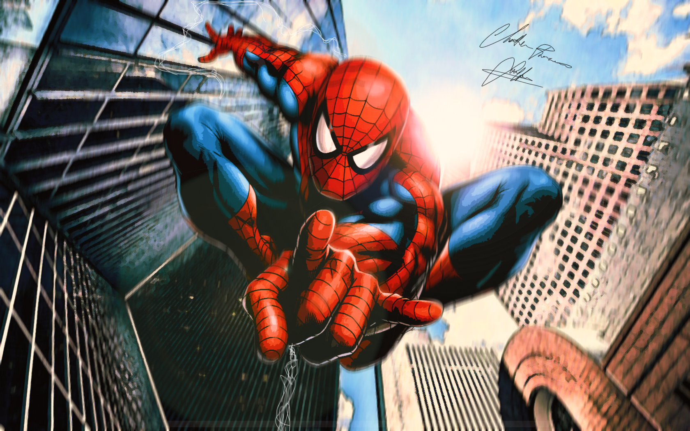
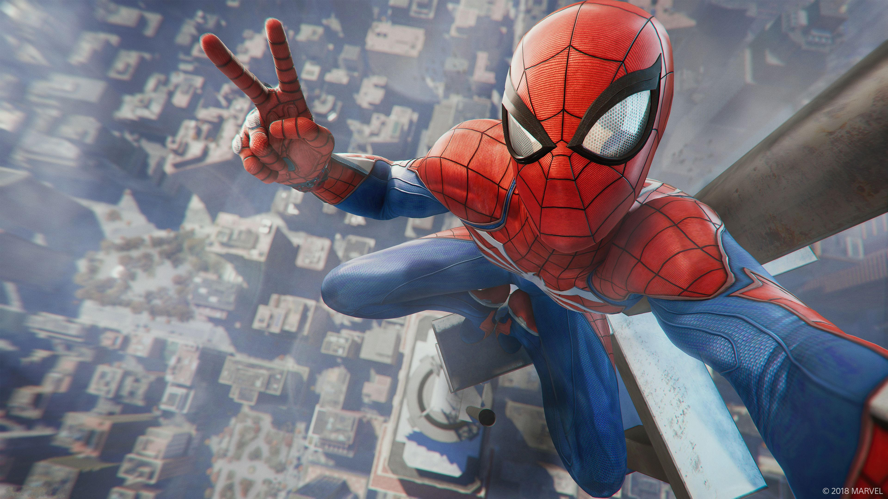

-

QUIEN ES SPIDER-MAN?
Peter Benjamin Parker, más conocido como Peter Parker, es el nombre de la persona que lleva la máscara de Spider-Man. Sus padres, Mary y Richard Parker, fallecen a causa de un accidente aéreo provocado por sus enemigos. Ambos eran agentes de la S.H.I.E.L.D., una agencia de espionaje dentro del universo Marvel.
-

Gracias a los conocimientos adquiridos en la escuela, construye un mecanismo que le permite lanzar un producto químico de la muñeca, el cual simula ser una telaraña. Asimismo, se crea un traje de color rojo y azul que le cubre todo el cuerpo y le permite ocultar su identidad. Es así como se produce el nacimiento de Spider-Man.
-

una fuerza, velocidad, agilidad, reflejos, equilibrio, coordinación y resistencia sobrehumanos que contrastan con su anterior condición, con estos nuevos dones, Spiderman se transforma en un símbolo de esperanza y resistencia para aquellos que, al igual que él, han sentido alguna vez que no encajaban
-

Spider-Man fue creado en 1962 por dos jóvenes que buscaban como incursionar en el mundo de la literatura gráfica. Habiendo dejado su empleo anterior y estando en la naciente Marvel Comics Stan Lee imaginó que los protagonistas de las viñetas no necesariamente debían ser de personalidades impenetrables o con alter egos perfectos. Así, bajo esa premisa, pensó que una persona normal, es más, medio extraña y con problemas sociales, podría ser una representación para muchos lectores.